Creating Github Repository
This page is about the creation of the Github Repository of this website.
Github Desktop is used.
I already have Github Desktop installed and signed in. So, I can start off by creating a new repository

Fill in the fields with appropriate information. I am thinking to fill in the README later. My teacher recommends the MIT License, so I will use that.

I move in and/or create HTML files that are needed.
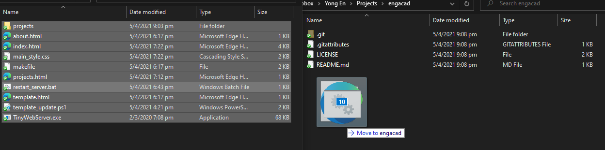I press "Commit to main" to save my changes to the repository.
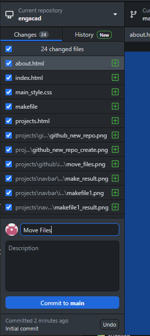At this stage, you can continue working on the project from the new directory. Every time you change any part of your project, you commit your changes to save them to the repository (you can think of it as an archive). Each commit, write a short description about the changes you have made for future reference. It is recommended to make small commits for each change you make rather than large commits.
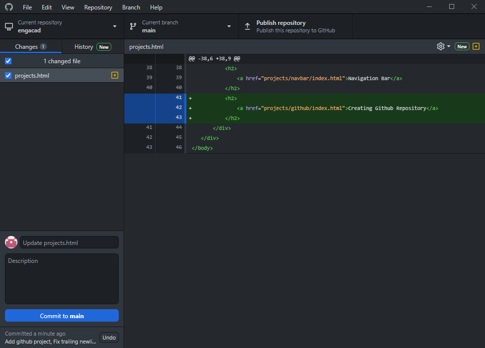Finally, I publish the repository to Github (the remote origin).
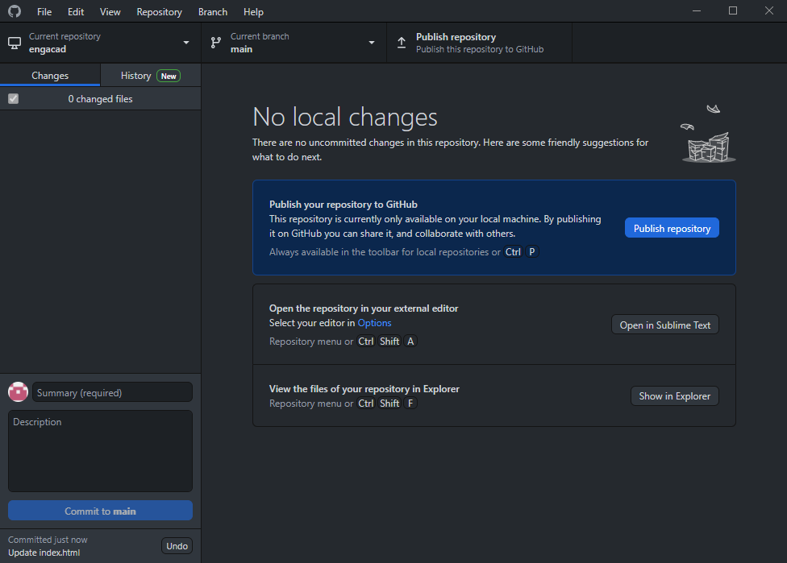I uncheck the box "Keep my code private" because I am planning to host this page as a public Github Pages site.
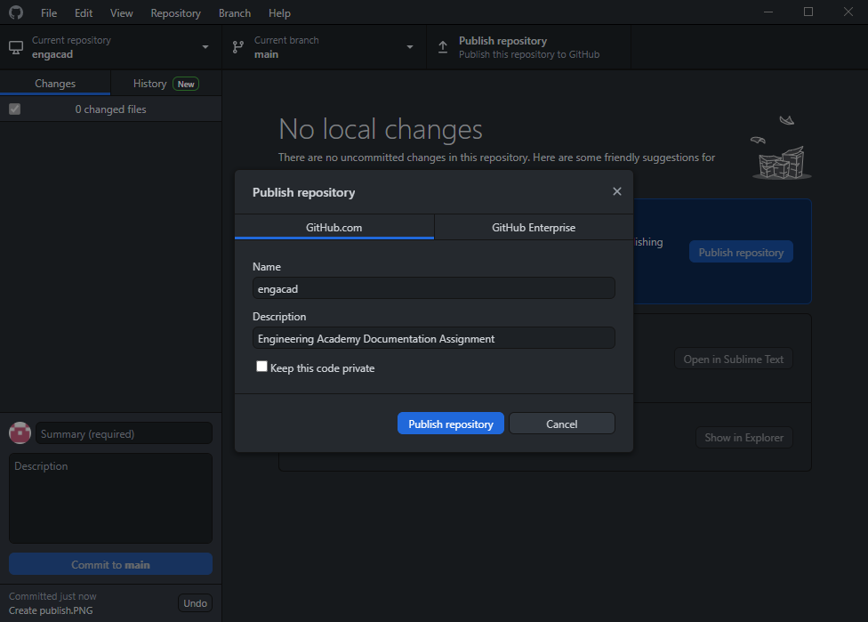Now that my project is published, I need to maintain the remote archive by regularly pushing my commits (changes).
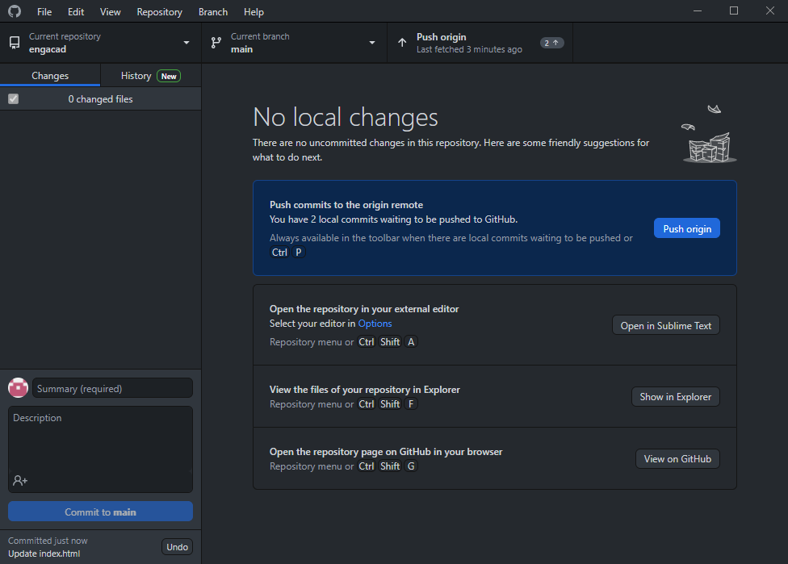Next, I will turn on GitHub Pages. I need to open the repository in the browser, since the settings are not available on Github Desktop.
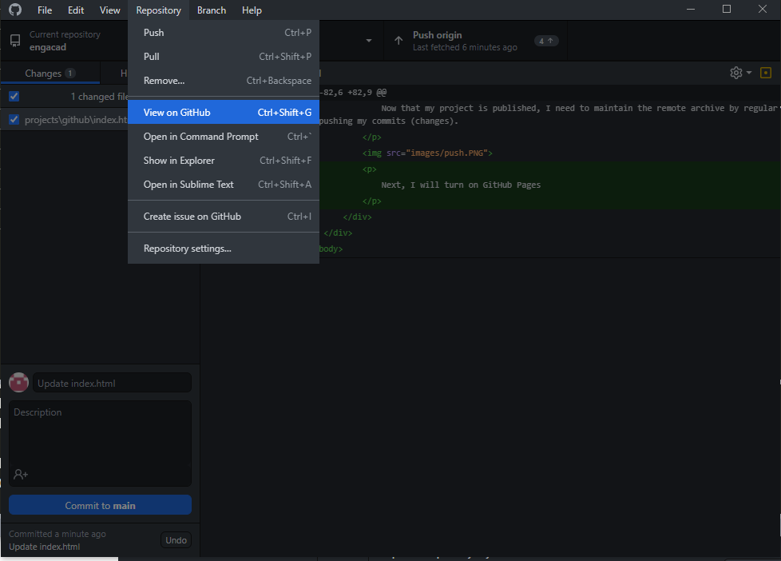Switching to the settings page,
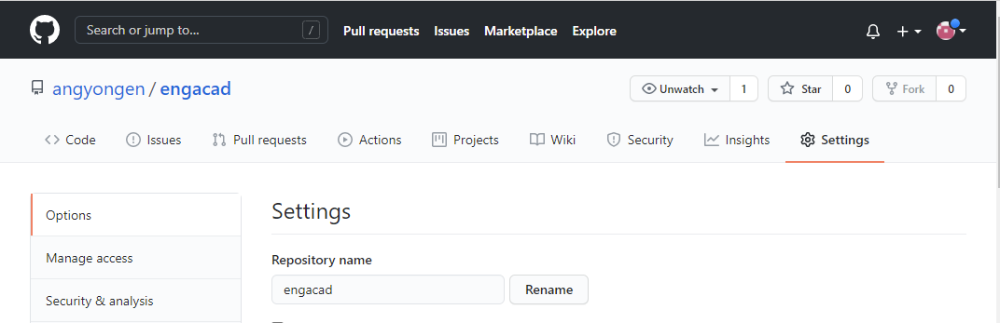Scrolling down to the Github Pages settings,

Select the main branch.
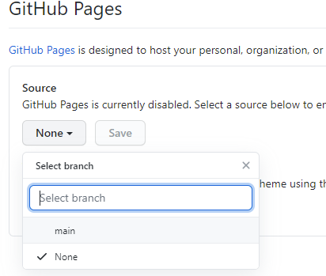Save the settings.
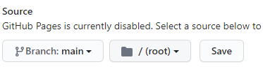Looks like there is a nice blue bar that pops up.
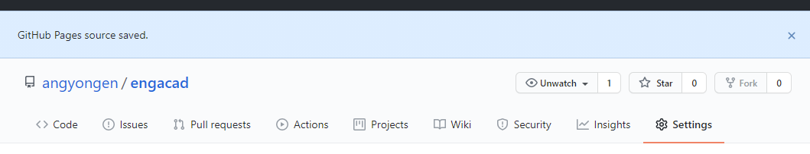I can now access the website on Github Pages!